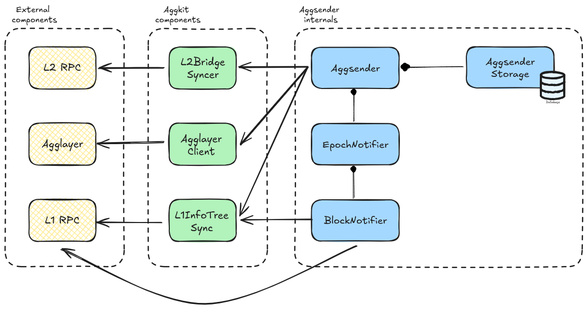

AggSender Component¶
AggSender is responsible for building and packing the information required to prove a target chain’s bridge state into a certificate. This certificate provides the inputs needed to build a pessimistic proof.
Component Diagram¶
The image below depicts the Aggsender components (the editable link of the diagram is found here).

Flow¶
Starting the AggSender¶
Aggsender gets the epoch configuration from the Agglayer. It checks the last certificate in DB (if exists) against the Agglayer, to be sure that both are on the same page:
- If the DB is empty then get, as starting point, the last certificate
Agglayerhas. - If it is a fresh start, and there are no certificates before this, it will set its starting block to 1 and start polling bridges and claims from the syncer from that block.
- If
Aggsenderis not on the same page asAgglayerit will log error and not proceed with the process of building new certificates, because this case means that there was another player involved that sent a certificate in place of theAggsenderwhich is an invalid case sinceAggsenderis a single instance per L2 network. It can also happen if we put a differentAggsenderdb (from a different network). - If both
AggsenderandAgglayerhave the same certificate, thenAggsenderwill start the certificate monitoring and build process since this is a valid use case.
sequenceDiagram
participant Agglayer
participant Aggsender
Aggsender->>Agglayer: Read epoch configuration
Aggsender->>Agglayer: Read latest known certificate
Aggsender-->>Aggsender: Wait for an epoch
Aggsender->>Agglayer: Send certificatePessimisticProof Mode¶
Aggsender will wait until the epoch event is triggered and ask the L2BridgeSyncer if there are new bridges and claims to be sent to Agglayer. Once we reach the moment in epoch when we need to send a certificate, the Aggsender will poll all the bridges and claims from the bridge syncer, based on the last sent L2 block to the Agglayer, until the block that the syncer has.
It is important to mention that no certificate will be sent to the Agglayer if the syncer has no bridges, since bridges change the Local Exit Root (LER).
If we have bridges, certificate will be built, signed, and sent to the Agglayer using the provided Agglayer RPC URL.
Currently, Agglayer only supports one certificate per L1 epoch, per network, so we can not send more than one certificate. After the certificate is sent, we wait until the next epoch, either to resend it if its status is InError, or to build a new one if its status Settled. Also, we have no limit yet in how many bridges and claims can be sent in a single certificate. This might be something to test and check, because certificates carry a lot of data through RPC, so we might hit the rpc layer limit at some point. For this reason, we introduced the MaxCertSize configuration parameter on the Aggsender, where the user can define the maximum size of the certificate (based on the rpc communication layer limit) in bytes, and the Aggsender will limit the number of bridges and claims it will send to the Agglayer based on this parameter. Since both bridges and claims carry fixed size of data (each field is a fixed size field), we can we great precision calculate the size of a certificate.
InError status on a certificate can mean a number of things. It can be an error that happened on the Agglayer. It can be an error in the data Aggsender sent, or the certificate was sent in between two epochs, which Agglayer considers invalid. Either way, the given certificate needs to be re-sent in the next epoch (or immediately after we notice its status change based on the RetryCertAfterInError config parameter), with all the previously sent bridges and claims, plus the new ones that happened after them, that the syncer saw and saved.
It is important to mention that, in the case of resending the certificate, the certificate height must be reused. If we are sending a new certificate, its height must be incremented based on the previously sent certificate.
Suppose the previously sent certificate was not marked as InError, or Settled on the Agglayer. In that case, we can not send/resend the certificate, even though a new epoch event is handled since it was not processed yet by the Agglayer (neither Settled nor marked as InError).
The image below depicts the interaction between different components when building and sending a certificate to the Agglayer in the PessimisticProof mode.
sequenceDiagram
participant User
participant L1RPC as L1 Network
participant L2RPC as L2 Network
participant Bridge as Bridge Smart Contract
participant AggLayer
participant L2BridgeSyncer
participant L1InfoTreeSync
participant AggSender
User->>L1RPC: bridge (L1->L2)
L1RPC->>Bridge: bridgeAsset
Bridge->>AggLayer: updateL1InfoTree
Bridge->>Bridge: auto claim
User->>L2RPC: bridge (L2->L1)
L2RPC->>L2BridgeSyncer: bridgeAsset emits bridgeEvent
User->>L2RPC: claimAsset emits claimEvent
L2RPC->>L1InfoTreeSync: index claimEvent
AggSender->>AggSender: wait for epoch to elapse
AggSender->>L1InfoTreeSync: check latest sent certificate
AggSender->>L2BridgeSyncer: get published bridges
AggSender->>L2BridgeSyncer: get imported bridge exits
Note right of AggSender: generate a Merkle proof for each imported bridge exit
AggSender->>L1InfoTreeSync: get l1 info tree merkle proof for imported bridge exits
AggSender->>AggLayer: send certificateAggchainProof Mode¶
In essence, the AggchainProof mode follows the same logic and flow as PessimisticProof mode. Only difference is in two points:
- Calling the aggchain prover to generate an aggchain proof that will be sent in the certfiicate to the Agglayer.
- Resending an InError certficate does not expand it with new bridges and events that the syncer might have gotten in the meantime. This is done because aggchain prover already generated a proof for a given block range, and since proof generation can be a long process, this is a small optimization.
- Note that this might change in the future.
Calling the aggchain prover is done right before signing and sending the certificate to the Agglayer. To generate an aggchain proof prover needs couple of things:
- Block range on L2 for which we are trying to generate a certificate.
- Finalized L1 info tree root, leaf, and proof on the L1 info tree. Basically, this is the latest finalized l1 info tree root needed by the prover to generate the proof. This root is also use to generate merkle proof for every imported bridge exit (claim) in certificate.
- Injected GlobalExitRoot’s on L2 and their leaves and proofs. Merkle proofs of the injected GERs are calculated based on the finalized L1 info tree root.
- Imported bridge exits (claims) we intend to include in the certificate for the given block range.
The image below depicts the interaction between different components when building and sending a certificate to the Agglayer in the AggchainProof mode.
sequenceDiagram
participant User
participant L1RPC as L1 Network
participant L2RPC as L2 Network
participant Bridge as Bridge Smart Contract
participant AggLayer
participant L2BridgeSyncer
participant L1InfoTreeSync
participant AggSender
participant AggchainProver
User->>L1RPC: bridge (L1->L2)
L1RPC->>Bridge: bridgeAsset
Bridge->>AggLayer: updateL1InfoTree
Bridge->>Bridge: auto claim
User->>L2RPC: bridge (L2->L1)
L2RPC->>L2BridgeSyncer: bridgeAsset emits bridgeEvent
User->>L2RPC: claimAsset
L2RPC->>L1InfoTreeSync: claimEvent
AggSender->>AggSender: wait for epoch to elapse
AggSender->>L1InfoTreeSync: check latest sent certificate
AggSender->>L2BridgeSyncer: get published bridges
AggSender->>L2BridgeSyncer: get imported bridge exits
AggSender->>L1InfoTreeSync: get finalized l1 info tree root
AggSender->>L2RPC: get injected GERs
Note right of AggSender: generate a Merkle proof for each injected GER
AggSender->>L1InfoTreeSync: get l1 info tree merkle proof for injected GERs
AggSender->>AggchainProver: generate aggchain proof
Note right of AggSender: generate a Merkle proof for each imported bridge exit
AggSender->>L1InfoTreeSync: get l1 info tree merkle proof for imported bridge exits
AggSender->>AggLayer: send certificateCertificate Data¶
The certificate is the data submitted to Agglayer. Must be signed to be accepted by Agglayer. Agglayer responds with a certificateID (hash)
| Field Name | Description |
|---|---|
network_id |
This is the id of the rollup (>0) |
height |
Order of certificates. First one is 0 |
prev_local_exit_root |
The first one must be the one in smart contract (currently is a 0x000…00) |
new_local_exit_root |
It’s the root after bridge_exits |
bridge_exits |
These are the leaves of the LER tree included in this certificate. (bridgeAssert calls) |
imported_bridge_exits |
These are the claims done in this network |
aggchain_params |
Aggchain params returned by the aggchain prover |
aggchain_proof |
Aggchain proof generated by the aggchain prover |
custom_chain_data |
Custom chain data returned by the aggchain prover |
Configuration¶
| Name | Type | Description |
|---|---|---|
| StoragePath | string | Full file path (with file name) where to store Aggsender DB |
| AgglayerClient | *aggkitgrpc.ClientConfig | Agglayer gRPC client configuration. |
| AggsenderPrivateKey | SignerConfig | Configuration of the signer used to sign the certificate on the Aggsender before sending it to the Agglayer. It can be a local private key, or an external one. |
| URLRPCL2 | string | L2 RPC |
| BlockFinality | string | Indicates which finality the AggLayer follows (FinalizedBlock, SafeBlock, LatestBlock, PendingBlock, EarliestBlock) |
| EpochNotificationPercentage | uint | Indicates the percentage of the epoch on which the AggSender should send the certificate. 0 = begin, 50 = middle |
| MaxRetriesStoreCertificate | int | Number of retries if Aggsender fails to store certificates on DB. 0 = infinite retries |
| DelayBetweenRetries | Duration | Delay between retries for storing certificate and initial status check |
| KeepCertificatesHistory | bool | If true, discarded certificates are moved to the certificate_info_history table instead of being deleted |
| MaxCertSize | uint | The maximum size of the certificate. 0 means infinite size |
| DryRun | bool | If true, AggSender will not send certificates to Agglayer (for debugging) |
| EnableRPC | bool | Enable the Aggsender’s RPC layer |
| AggkitProverClient | *aggkitgrpc.ClientConfig | Configuration for the AggkitProver gRPC client |
| Mode | string | Defines the mode of the AggSender (PessimisticProof or AggchainProof) |
| CheckStatusCertificateInterval | Duration | Interval at which the AggSender will check the certificate status in Agglayer |
| RetryCertAfterInError | bool | If true, Aggsender will re-send InError certificates immediately after status change |
| MaxSubmitCertificateRate | RateLimitConfig | Maximum allowed rate of submission of certificates in a given time. |
| GlobalExitRootL2Addr | Address | Address of the GlobalExitRootManager contract on L2 sovereign chain (needed for AggchainProof mode) |
| SovereignRollupAddr | Address | Address of the sovereign rollup contract on L1 |
| RequireStorageContentCompatibility | bool | If true, data stored in the database must be compatible with the running environment |
| RequireNoFEPBlockGap | bool | If true, AggSender should not accept a gap between lastBlock from lastCertificate and first block of FEP |
| OptimisticModeConfig | optimistic.Config | Configuration for optimistic mode (required by FEP mode). |
| RequireOneBridgeInPPCertificate | bool | If true, AggSender requires at least one bridge exit for Pessimistic Proof certificates |
| MaxL2BlockNumber | uint64 | Set the last block to be included in a certificate (0 = disabled) |
| StopOnFinishedSendingAllCertificates | bool | Stop when there are no more certificates to send due to MaxL2BlockNumber |
| ## OptimisticConfig |
The OptimisticConfig structure configures the optimistic mode for the AggSender. This configuration is required when running in FEP (Fast Exit Protocol) mode.
| Field Name | Type | Description |
|---|---|---|
| SovereignRollupAddr | Address | The L1 address of the AggchainFEP contract |
| TrustedSequencerKey | SignerConfig | The private key used to sign optimistic proofs. Must be the trusted sequencer’s key. |
| OpNodeURL | string | The URL of the OpNode service used to fetch aggregation proof public values |
| RequireKeyMatchTrustedSequencer | bool | If true, enables a sanity check that the signer’s public key matches the trusted sequencer address. This ensures the signer is the trusted sequencer and not a random signer. |
Example:
[AggSender]
[AggSender.OptimisticModeConfig]
SovereignRollupAddr = "0x1234..."
TrustedSequencerKey = { Method="local", Path="/opt/private_key.keystore", Password="password" }
OpNodeURL = "http://localhost:8080"
RequireKeyMatchTrustedSequencer = true
The optimistic mode is used in FEP (Fast Exit Protocol) to enable faster exit processing by allowing optimistic proofs to be submitted before full verification. The trusted sequencer is responsible for signing these proofs, and this configuration ensures that only the authorized trusted sequencer can submit proofs.
Use Cases¶
This paragraph explains different use cases with outcomes:
- No bridges from L2 -> L1 means no certificate will be built.
- Having bridges without claims, means a certificate will be built and sent.
- Having bridges and claims, means a certificate will be built and sent.
- If the previous certificate we sent is
InError, we need to resend that certificate with all the previous sent data, plus new bridges and claims we saw after that. - If the previously sent certificate is not
InErrororSettled, no new certificate will be sent/resent. TheAggSenderwaits for one of these two statuses on theAgglayer.
Debugging in Local with Bats E2E Tests¶
- Start kurtosis with pessimistic proof yml file (
kurtosis run --enclave aggkit --args-file .github/tests/fork12-pessimistic.yml .). Changegas_token_enabledto true. - After kurtosis is started, stop the
cdk-node-001service (kurtosis service stop aggkit cdk-node-001). - Open the repo in an IDE (like Visual Studio), and run
./scripts/local_configfrom the main repo folder. This will generate a./tmpfolder in whichAggsenderstorage will be saved, and other aggkit node data, and will print alaunch.json:
{
"version": "0.2.0",
"configurations": [
{
"name": "Debug aggsender",
"type": "go",
"request": "launch",
"mode": "auto",
"program": "cmd/",
"cwd": "${workspaceFolder}",
"args":[
"run",
"-cfg", "tmp/aggkit/local_config/test.kurtosis.toml",
"-components", "aggsender",
]
}
]
}
- Copy this to your
launch.jsonand start debugging. - This will start the
aggkitwith theaggsenderrunning. - Navigate to the
test/bats/ppfolder (cd test/bats/pp). - Run a test in
bridge-e2e.batsfile:bats -f "Native gas token deposit to WETH" bridge-e2e.bats. This will build a new certificate after it is done, and you can debug the whole process.
Prometheus Endpoint¶
If enabled in the configuration, Aggsender exposes the following Prometheus metrics:
- Total number of certificates sent
- Number of sending errors
- Number of successful sends
- Certificate build time
- Prover execution time
Configuration Example¶
To enable Prometheus metrics, configure Aggsender as follows:
[Prometheus]
Enabled = true
Host = "localhost"
Port = 9091
With this configuration, the metrics will be available at: http://localhost:9091/metrics